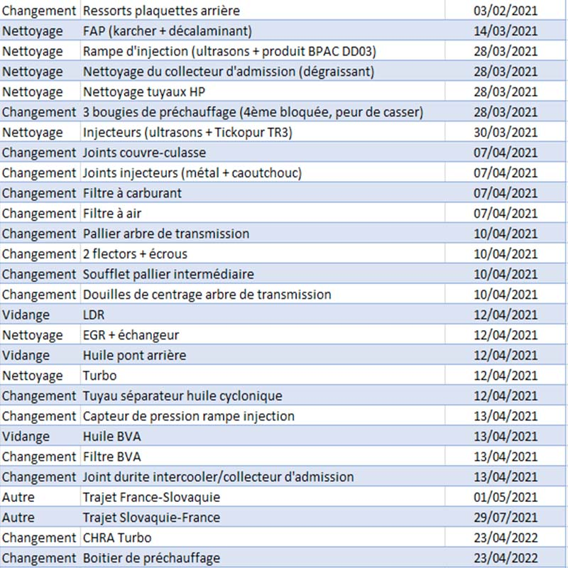
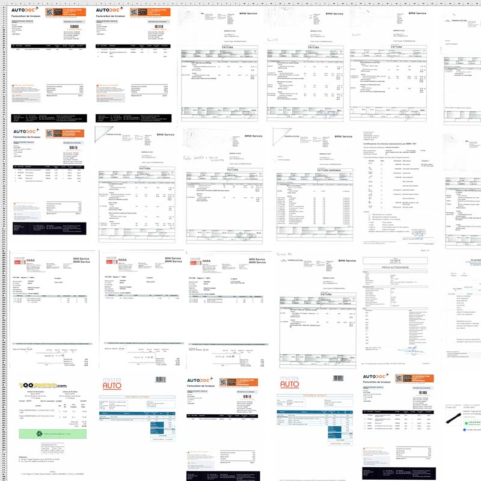
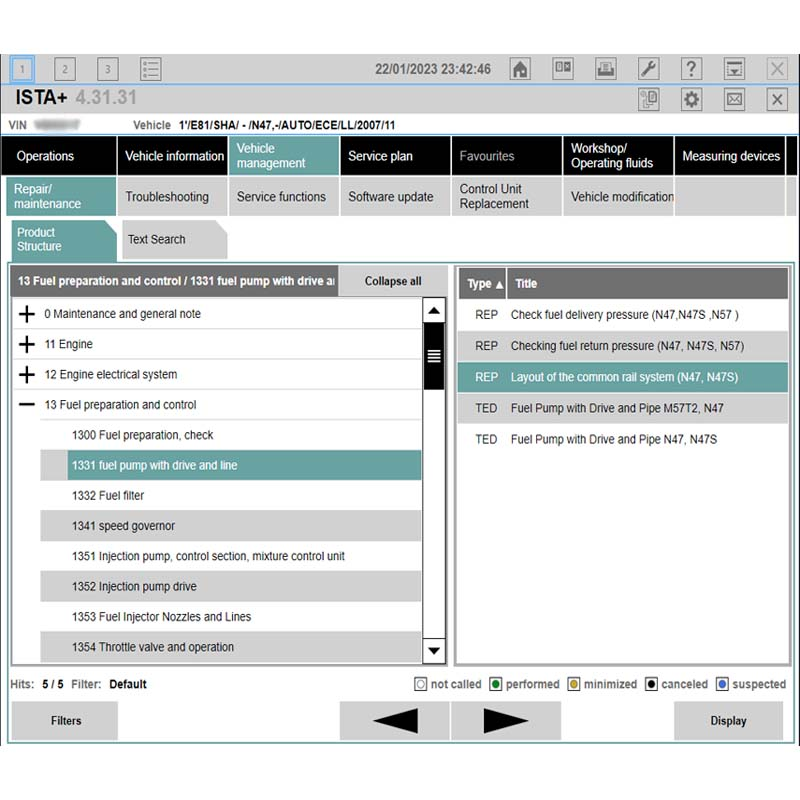
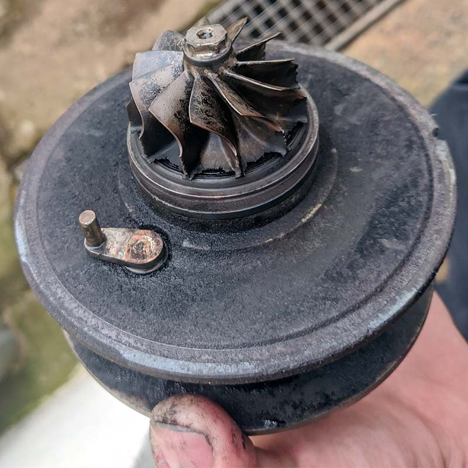
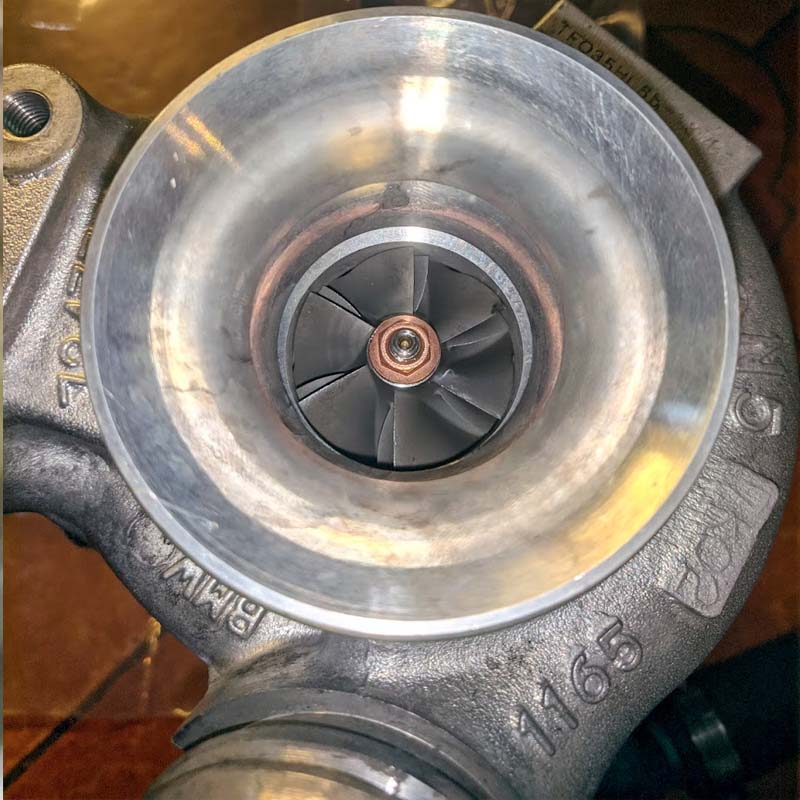
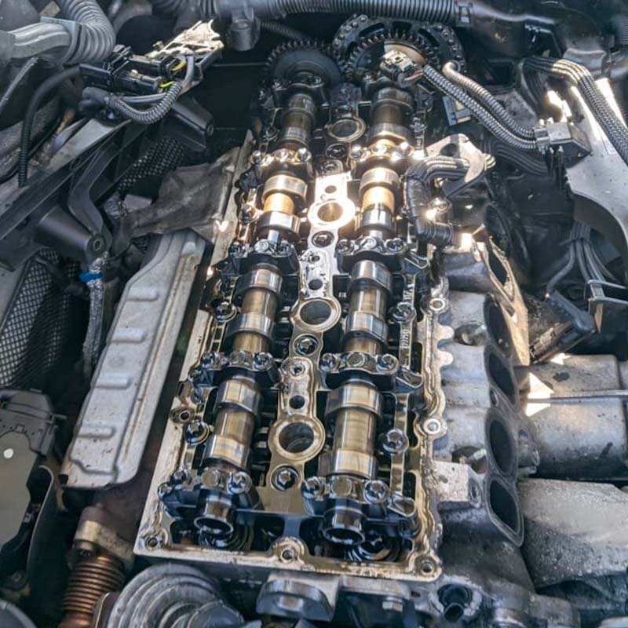
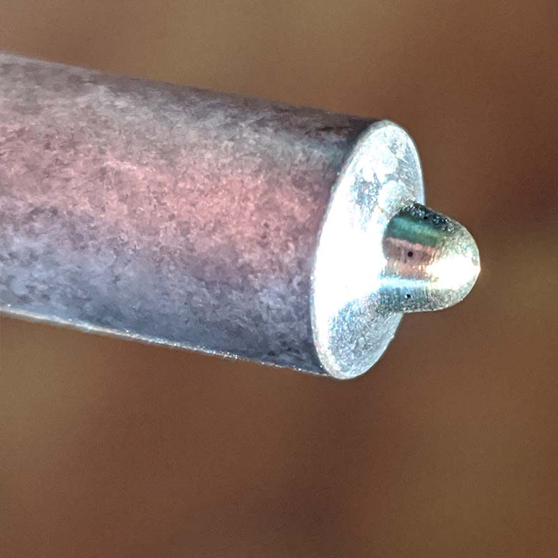
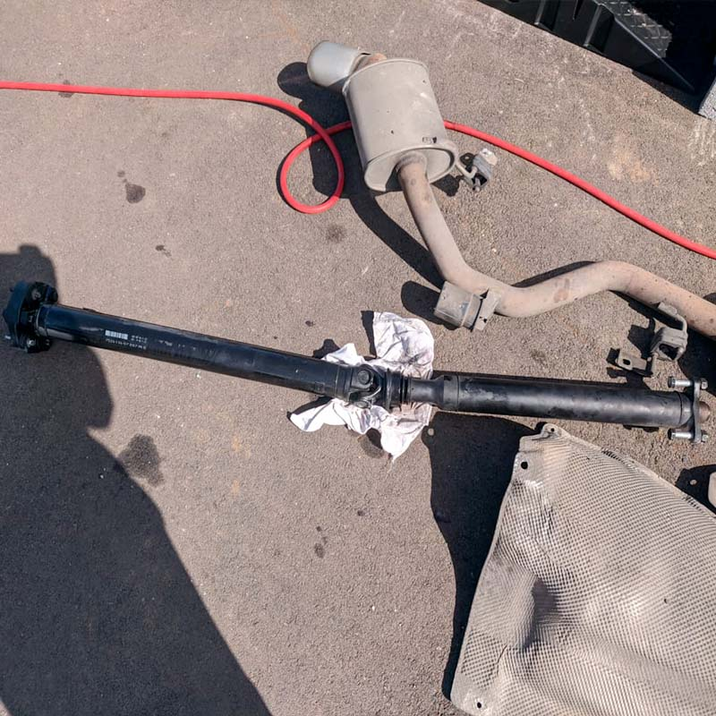

Ingénieur en aéronautique et spatial, ayant élargi ses compétences en tant que manager de projets digitaux dans l'automobile en quête de spécialisation dans l'informatique pour relever de nouveaux défis professionnels.
Faites défiler l'écran et apprenez en plus sur mes projets.
Mécanique automobile
Réparations d'une BMW E81 120D•2020 - aujourd'hui
Objectifs: Effectuer les réparations nécessaires sur la voiture de manière autonome.
Avantages
Inconvénients
Économie d'argent
Connaissance accrue de ma voiture
Flexibilité
Temps consommé
Risques d'endommager la voiture
Pas de garantie
Nécessite des outils et des compétences
Historisation de toutes les opérations
J'ai mis en place un système de suivi rigoureux des informations relatives à ma voiture via un tableau Excel :
Je liste chaque opération effectuée sur la voiture (réparation et entretien) ainsi que les factures correspondantes.
Les références officielles BMW des pièces que j'ai changées.
Les couples de serrage des vis et écrous pour toutes les pièces que j'ai manipulées.
Les données de géométrie de la voiture (parallélisme et carrossage) des deux trains.

Tableau excel des opérations effectuées

Scan de chacune des factures de la voiture
Logiciel ISTA D/P
ISTA-D (diagnostique) et ISTA-P (programmation) sont des logiciels concessionnaires BMW.
Je m'appuie fréquemment sur l'outil ISTA-D pour évaluer l'état de mon véhicule, notamment en ce qui concerne la détection de codes d'erreur et la planification des entretiens nécessaires.

Logiciel ISTA-D
La catégorie "Vehicle management", permet d'afficher les fiches de réparations (mode d'emploi, outils nécessaires, couple, etc...)
Changement CHRA Turbocompresseur
J'ai constaté un important jeu axial et radial lors de l'inspection de la turbine du turbo.
L'augmentation du bruit émis par le turbo m'a conduit à prendre la décision de procéder à son remplacement.
Afin de minimiser les dépenses, j'ai choisi de remplacer uniquement le CHRA (Central Housing Rotary Assembly) et les durites d'huile.
Cette opération a été réalisée à un coût inférieur à 100€.

Ancien CHRA
Ailettes abimées (200 000 km)

CHRA assemblé
Le turbo à l'air comme neuf
Nettoyage injecteurs
Après avoir parcouru plus de 200 000 km, j'ai suspecté que mes injecteurs étaient sales et potentiellement obstrués.
J'ai donc pris la décision de les démonter et de les nettoyer en utilisant un bac à ultrasons avec un produit dégraissant spécifique.

Culasse
Couvre-culasse retiré

Injecteur
Zoom sur la tête de l'injecteur
Changement palier d'arbre
J'ai constaté qu'un bruit de claquement apparaissait de plus en plus fréquemment lors des accélérations.
Après avoir éliminé les différentes causes potentielles (boîte de vitesse, pont, etc.) j'ai déterminé que le problème était lié à l'arbre de transmission.
Il s'agissait d'un bruit de claquement sourd au niveau du bas de l'habitacle :
Le caoutchouc du palier présentait des dommages conséquents :

Arbre démonté
Nécessite de déposer la ligne d'échappement et les écrans pare-feu